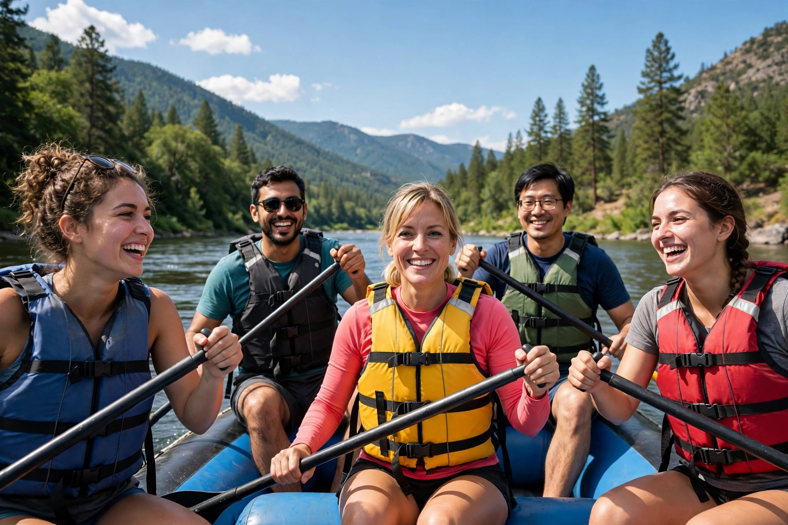

Welcome to Exciting Expeditions! Our purpose is to provide thrilling, safe, and unforgettable white water rafting adventures for everyone. Our mission is to connect people with the power and beauty of the river through expert guides, quality equipment, and a passion for the outdoors. Come live the adventure!
